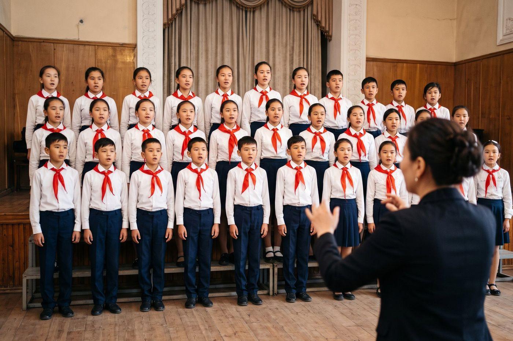

ChabalekeiChildren’s Choir of the Palace of Art · Iyık Janyl · sixty voices aged 7 to 15
On the risers this year
Seniors, 12 to 15Tue 17:30 · Fri 16:30Full this year
Juniors, 9 to 11Tue 16:30 · Fri 16:303 places left
Starters, 7 and 8Sat 11:008 places left

Come and listen on a Saturday
Juniors and starters can join any time there is a place. Bring your child to a Saturday rehearsal, 11:00, Palace concert hall; they sing a song they like and the teacher listens. No fee: the Körköm Foundation pays the teachers.
Next concert: Christmas songs in Iradi, Syriac and Russian, Cathedral of St. Janyl, Sunday 27 December, 16:00. Free entry. All concerts